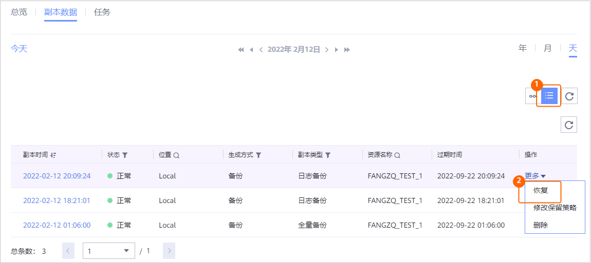
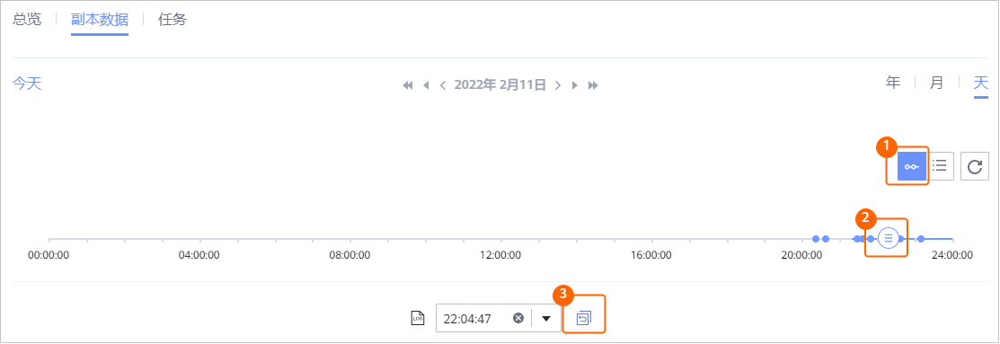

当需要对已备份的HBase备份集进行恢复时，可以参考本节恢复HBase备份集至原位置或新位置。
背景信息
支持使用备份副本、复制副本、导入的副本进行恢复。支持恢复至原位置（复制副本不支持恢复至原位置）或新位置。
操作步骤
- 选择“数据利用 > 副本数据 > 大数据 > HBase”。
- 您可以以HBase备份集资源维度或以副本维度查找副本，本节以资源维度为例进行说明。
在“资源”页签，根据备份集名称查找到需要恢复的备份集，并单击备份集名称。
- 在“副本数据”页签，依次选择年、月、天找到副本。
当时间上显示
 ，即表示该月、该天存在副本。
，即表示该月、该天存在副本。 - 指定副本或时间点进行恢复。
您可以指定副本或指定时间点进行恢复。
- 指定副本或指定时间点进行恢复。
- 指定副本进行恢复

- 指定时间点进行恢复。

时间轴上蓝色覆盖区域均可进行时间点恢复，表示该时间点存在全量备份副本或永久增量（合成全量）副本。如果需要进行时间点恢复，请确保待恢复到的时间点或之前存在非日志备份的副本，且在该时间点之后进行过日志备份。

- 对于1.5.0版本，时间轴上最多仅展示100个副本，单击
 可以查看所有副本。
可以查看所有副本。 - 执行时间点恢复时，由于管理界面无法获取恢复时所使用的副本信息，因此，在恢复任务和相关的事件页面，用户无法看到该恢复任务的副本信息。
- 对于1.5.0版本，时间轴上最多仅展示100个副本，单击
- 指定副本进行恢复
- 恢复HBase备份集至原位置或新位置。
相关参数说明如表1。
- 单击“确定”。
- 指定副本或指定时间点进行恢复。